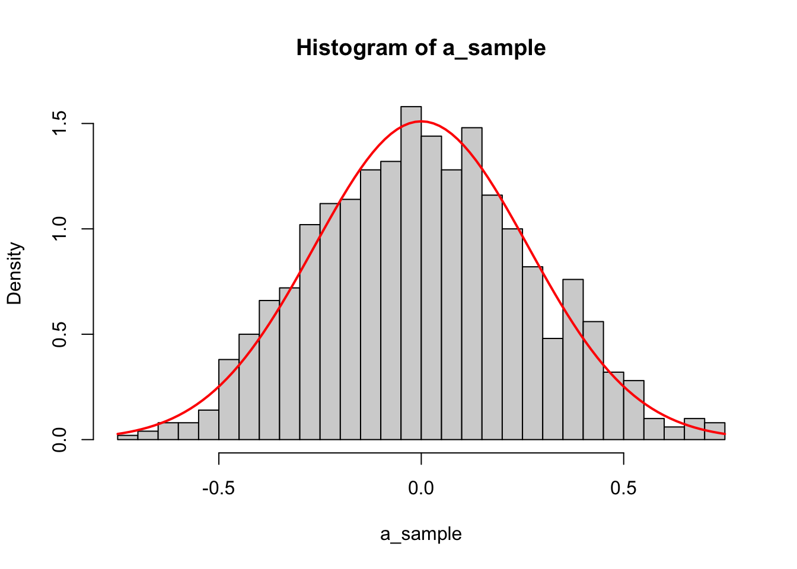
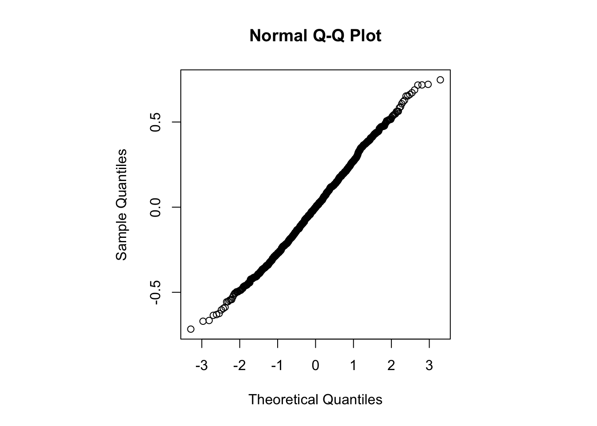
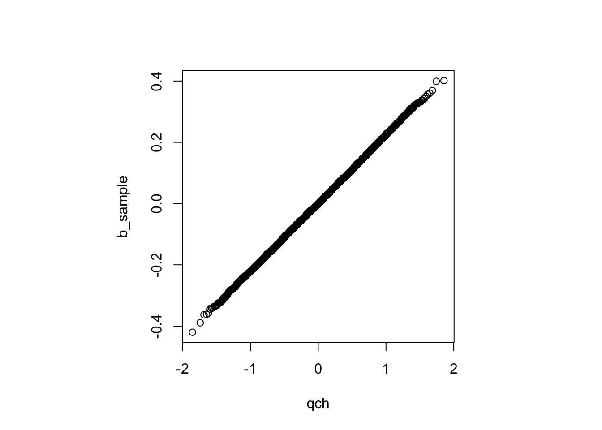
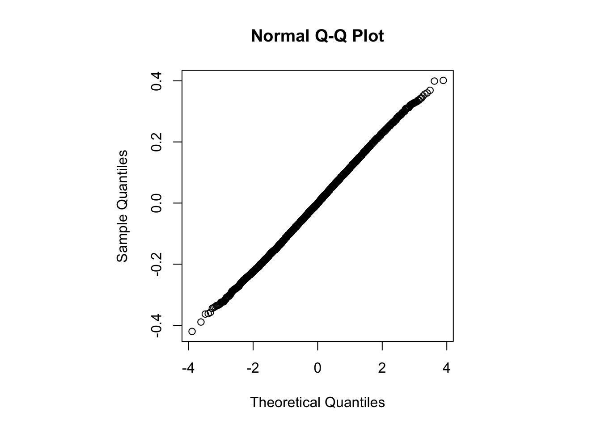

Riffing off Andrew Gelman’s (correct) advice to just simulate, in both teaching and research, suppose I have a new robust location estimator. For a data set \(X_1,\dots, X_n\), I want to find the densest half of the distribution and take some location summary of it.1 Let’s say I want the mean. That is, I want to define a 50% subset of the data by
function(x) {
s<-sort(x)
n<-length(s)
halfn<- n%/%2
i<-which.min(sapply(1:halfn, function(i) diff(range(s[i:(i+halfn)]))))
mean(s[i:(i+halfn)])
}though with better handling of ties and missing values in production code.
This is pretty clearly consistent for the mean of the densest half of the true distribution. It’s going to be quite a bit harder2 to prove that it has a Normal distribution asymptotically, but we can simulate it and check. It’s an average, at least.
We might give the function a name, such as shorthalf
shorthalf<-function(x) {
s<-sort(x)
n<-length(s)
halfn<- n%/%2
i<-which.min(sapply(1:halfn, function(i) diff(range(s[i:(i+halfn)]))))
mean(s[i:(i+halfn)])
}and generate a sample from it for, say, Normal \(X\)
set.seed(2025-1-6)
a_sample <- replicate(1000, {x<-rnorm(100); shorthalf(x)})Now we could plot a histogram
hist(a_sample,breaks=50,prob=TRUE)
s<-sd(a_sample)
curve(dnorm(x,s=s),add=TRUE, col="red",lwd=2) or a quantile-quantile plot
par(pty="s")
qqnorm(a_sample)
Not bad. Maybe try a larger sample?
b_sample <- replicate(10000, {x<-rnorm(1000); shorthalf(x)})and the plots
hist(b_sample,breaks=50,prob=TRUE)
s<-sd(b_sample)
curve(dnorm(x,s=s),add=TRUE, col="red",lwd=2)
par(pty="s")
qqnorm(b_sample)
And maybe see what a Shapiro-Wilk test says (it can’t handle more than 5000 points, because that’s as far as Patrick Royston studied the approximation to the null distribution)
shapiro.test(b_sample[1:5000])##
## Shapiro-Wilk normality test
##
## data: b_sample[1:5000]
## W = 0.99954, p-value = 0.2736One thing you might notice is the inefficiency
var(a_sample)## [1] 0.06977316var(b_sample)## [1] 0.01301342The variances for the mean would be 0.01 and 0.001. For the median they would be a bit larger, but they’d still scale by close to a factor of ten:
var(replicate(1000, {x<-rnorm(100); median(x)}))## [1] 0.01519022var(replicate(10000, {x<-rnorm(1000); median(x)}))## [1] 0.001616641Our new estimator seems to be massively less efficient than the median at Normal distributions, which is a bit disappointing.
At this point you might be wondering if anyone has studied this estimator before. Indeed they have! It is Tukey’s shorth, and it is known to have really low efficiency at the Normal. In fact, it has spread of order \(n^{-1/3}\) (variance of order \(n^{-2/3}\)), in contrast to the \(n^{-1/2}\) of reasonable estimators, and is not asymptotically Normal.
The scaling of the variance with sample size is clearly a better fit for the cube-root asymptotics
var(a_sample)*(100)## [1] 6.977316var(b_sample)*(1000)## [1] 13.01342var(a_sample)*(100)^(2/3)## [1] 1.503217var(b_sample)*(1000)^(2/3)## [1] 1.301342“But it looks asymptotically Normal!”, you respond. Yes, it does.
Rather than looking at the Normal qq-plot, we can look at the qq-plot for the correct asymptotic distribution. Chernoff’s distribution is the ‘canonical’ cube-root limiting distribution in much the same way that the Gaussian is the limiting distribution for square-root asymptotics. It’s fairly close to \(N(0,.52^2)\), but has lighter tails.
Chernoff’s distribution arises in the asymptotics as the distribution of the location of the maximum of Brownian motion minus a quadratic drift term. In the tails, the density is approximated by
\[f(z)\sim a|z|\exp\{ -\frac{2}{3}|z|^3+b|z|\},\]
where \(a\) and \(b\) are unpleasant but precisely described positive constants, so we can see the tail is exponentially lighter than a Normal. Computing the density near zero is … not entirely straightforward.3 Fortunately, there’s a ChernoffDist package.4
The qChern quantile function only works down to \(10^{-3}\) out of the box, because the starting values for its zero-finding break down, but we can fix that
qChern<-function (p)
{
return(stats::uniroot(function(x) {
ChernoffDist::pChern(x) - p
}, c(stats::qnorm(p, sd = 0.52) - 0.3, stats::qnorm(p, sd = 0.52) +
0.31), tol = 1e-10)$root)
}qch<-sapply(ppoints(10000), qChern)and produce a qq-plot to compare to the Normal one
par(pty="s")
qqplot(qch,b_sample)
qqnorm(b_sample)
a difference which is robustly unimpressive.
We can look a bit more at the efficiency by adding another sample size
c_sample <- replicate(1000, {x<-rnorm(10000); shorthalf(x)})
var(c_sample)/var(b_sample)## [1] 0.2001303var(b_sample)/var(a_sample)## [1] 0.18651030.1^(2/3)## [1] 0.2154435which is still scaling nicely at the cube-root rate.
You might say that my simulations were all for a Normal, and maybe things would be different if \(X\) had a \(t_{3.2}\) distribution or a Gamma distribution or something, and to some extent that’s right. If \(X\) is skewed it takes quite large samples for the skewness to disappear from the distribution of the shorth. But the comparison between qqnorm and qq_actually_chernoff doesn’t depend on the distribution of \(X\); the two plots will be almost identical for any raw data distribution.
So maybe you don’t care about the difference between Chernoff’s distribution and an approximating Normal, but you probably would care about the efficiency, and you might need to know about the asymptotic rate if you want to do, eg, sample size calculations. And simulations may tell you this more quickly than finding the theoretical analysis of the shorth.
if you know the punch line here then you are old enough to keep it to yourself↩︎
for various reasons↩︎
according to Piet Groeneboom↩︎
though it could do with a bit of work on vectorisation, if anyone is interested↩︎